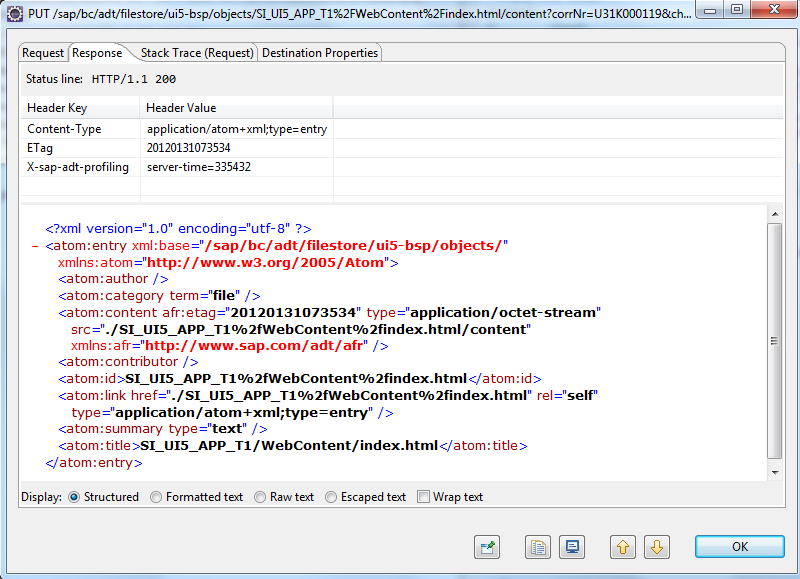

Using the ABAP Communication Log for Troubleshooting
For troubleshooting purposes, you can use the ABAP communication log to log all REST requests from and to the ABAP system.
- To open the ABAP Communication Log view in Eclipse, choose
 Window
Window  Show View Others ... ABAP ABAP Communication Log
Show View Others ... ABAP ABAP Communication Log .
.
- To start logging, choose Start logging. You can stop logging by choosing Stop logging.
- The ABAP communication log displays all requests between Eclipse and the connected ABAP system, giving you information about the HTTP method (GET, PUT, POST, and DELETE), the query parameters of the request, and the HTTP status code.
- If you click a request, the details of this request are displayed (such as request,
response, or stack trace), giving you information about the HTTP header fields and
the content of the request and the response (see the following screenshot).
